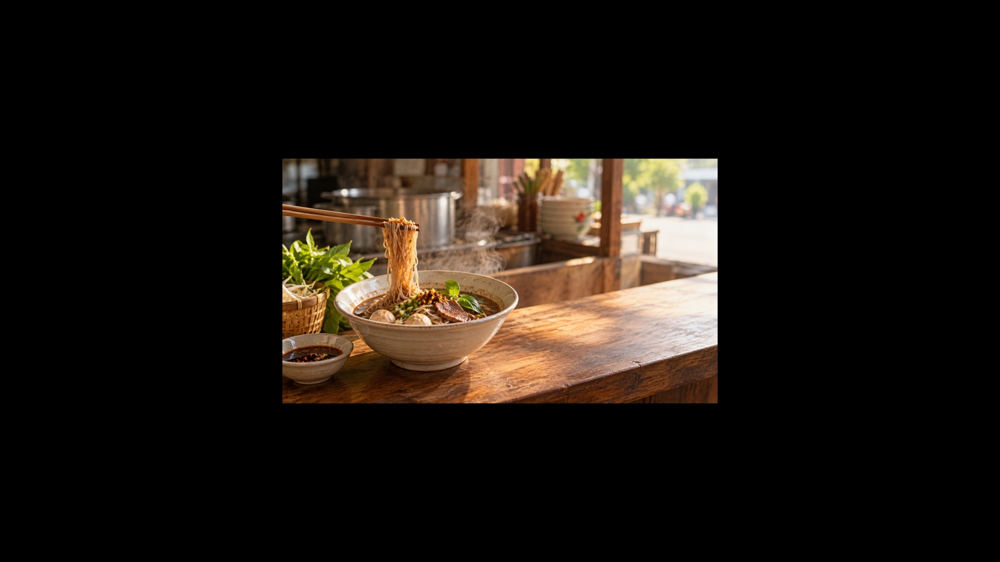

คลิปขายอาหารด้วย AI: เขียนบรีฟ 3 ส่วนสำหรับ Seedance 2.5 และ MiniMax H3
ถ้าร้านอาหารเล็ก ๆ มีภาพอาหารอยู่แล้วหรือมีไอเดียโปรโมตสั้น ๆ จุดเริ่มต้นที่ควรเขียนให้ชัดอาจไม่ใช่ชื่อเมนูจำนวนมาก แต่คือบรีฟสั้นที่อ่านแล้วเห็นภาพเดียวกันได้ บทความนี้ใช้สถานการณ์ คลิปขายอาหารด้วย AI เป็นบริบทของผู้อ่านเท่านั้น ไม่ได้อ้างว่าเป็นคำค้นยอดนิยม ปริมาณค้นหา หรือคำเรียก “วิดีโอเมนู” ที่ยืนยันแล้ว

ภาพประกอบเชิงบรรณาธิการ: ชามก๋วยเตี๋ยวและจังหวะการคีบเส้น เป็นเพียงตัวอย่างสำหรับแยก subject, action และ setting ไม่ใช่ภาพจากผลการสร้างของโมเดล
การเปิดเผยข้อมูล: ผู้เขียนเป็นผู้ก่อตั้ง VideoWeb AI และบทความนี้แนะนำหน้าบริการของ VideoWeb AI พร้อมวิธีจัดบรีฟให้ตรวจทานง่าย
ข้อจำกัด: บทความนี้ไม่ได้รายงานการสร้างวิดีโอจริง การทดสอบอิสระ หรือการเปรียบเทียบผลลัพธ์ของโมเดล จึงไม่สรุปเรื่องคุณภาพ ความสม่ำเสมอ ความเร็ว ความถูกต้องของข้อความภาษาไทย เสียง หรือผู้ชนะ
เริ่มจากบรีฟ 3 ส่วน ไม่ใช่คำคุณศัพท์ยาว ๆ
สำหรับงาน Short Video Creation ให้ล็อกเพียงสามช่องก่อน แล้วค่อยเพิ่มรายละเอียดที่จำเป็น:
1) Subject — สิ่งที่ผู้ชมต้องมองเห็น
ระบุวัตถุหลักให้เป็นรูปธรรม เช่น “ชามก๋วยเตี๋ยวเรือบนโต๊ะไม้ มีผักสดด้านข้าง” ไม่จำเป็นต้องใส่คำชมเช่น “น่ากินที่สุด” เพราะคำนั้นไม่ได้บอกวัตถุหรือองค์ประกอบที่ต้องจัดวาง
2) Action — การกระทำที่มองเห็นได้เพียงหนึ่งอย่าง
เลือกหนึ่งจังหวะ เช่น “ตะเกียบคีบเส้นขึ้นจากชามหนึ่งครั้ง” การจำกัดไว้หนึ่งการกระทำช่วยให้บรีฟมีจุดตรวจทานที่ชัด โดยไม่ต้องบอกล่วงหน้าว่าระบบใดจะทำให้การเคลื่อนไหวออกมาแบบใด
3) Setting — สถานที่และแสงที่ให้บริบท
เขียนสภาพแวดล้อมที่ช่วยสื่อร้านและเวลา เช่น “เคาน์เตอร์ไม้หน้าร้านในแสงเช้าอุ่น ๆ มีไอน้ำบาง ๆ” ช่องนี้คือบริบทของภาพ ไม่ใช่คำรับประกันว่าแสง รายละเอียดอาหาร หรืออักษรบนป้ายจะถูกสร้างได้ตรงตามที่ต้องการ
ตัวอย่างบรีฟที่คัดลอกไปปรับได้
รวมสามส่วนให้เป็นประโยคเดียวก่อน แล้วอ่านทวนว่ามีการกระทำจริงเพียงหนึ่งอย่าง:
ชามก๋วยเตี๋ยวเรือบนโต๊ะไม้ มีผักสดด้านข้าง; ตะเกียบคีบเส้นขึ้นจากชามหนึ่งครั้ง; เคาน์เตอร์หน้าร้านในแสงเช้าอุ่น ๆ มีไอน้ำบาง ๆ
จากนั้นเพิ่มสิ่งที่ต้องการตรวจทานเฉพาะงานอย่างระมัดระวัง เช่น มุมกล้องหรืออัตราส่วนภาพ หากมีภาพอาหารต้นทาง ให้ตัดสินใจก่อนว่าจะใช้บรีฟแบบข้อความหรือเริ่มจากภาพ ไม่ควรเปลี่ยนหลายตัวแปรพร้อมกันจนย้อนดูไม่ได้ว่าอะไรเป็นสิ่งที่ตั้งใจขอ
Seedance 2.5 vs MiniMax H3: ใช้บรีฟเดียวกันโดยไม่ตัดสินผู้ชนะ
ชื่อรุ่นทั้งสองช่วยชี้ไปยังหน้าที่เกี่ยวข้องสำหรับอ่านข้อมูลต่อ แต่ไม่ได้ทำให้ตัวเลขหรือคำโปรยบนหน้ากลายเป็นผลทดสอบเดียวกัน วิธีที่ปลอดภัยคือเก็บ subject, action และ setting ไว้เหมือนเดิม แล้วปรับเพียงรูปแบบข้อมูลที่แต่ละหน้าอธิบายไว้
เมื่อต้องการอ่านหน้าของ Seedance 2.5
หน้า Seedance 2.5 ของ VideoWeb AI อธิบายเส้นทางจากข้อความเป็นวิดีโอ การแปลงภาพเป็นวิดีโอ และสื่ออ้างอิงในฐานะคำอธิบายของ VideoWeb เอง หากเริ่มจากภาพอาหาร ให้เก็บ subject เดิมไว้และระบุ action เดียวกับ setting เดิมในข้อความประกอบ แทนที่จะขยายเป็นรายการข้ออ้างเรื่องผลลัพธ์
ในหน้าเดียวกัน VideoWeb แสดงเมทาดาทา 480p/720p และกล่าวถึงเอาต์พุตสูงสุด 1080p เมื่อพร้อมใช้งาน จึงไม่ควรย่อความว่า 1080p เป็นเพดานเดียวหรือเป็นสิทธิ์ที่ทุกงานจะได้รับ เมทาดาทาเริ่มต้น 480p กับ 5 วินาทีก็ไม่ใช่รายการการตั้งค่าทั้งหมดหรือเกณฑ์วัดผลลัพธ์
เมื่อต้องการอ่านหน้าของ MiniMax H3
หน้า MiniMax H3 ของ VideoWeb AI อธิบายการเริ่มจากแนวคิดข้อความหรือภาพต้นทาง และยกส่วนประกอบของข้อความพรอมต์ เช่น subject, action, camera, look และ sound ไว้ในคำอธิบายของ VideoWeb สำหรับบรีฟนี้จึงสามารถส่งต่อสามส่วนเดิม แล้วเพิ่มมุมกล้องหรือ look เฉพาะเมื่อจำเป็นต่อการสื่อสารของร้าน
หน้านี้ของ VideoWeb กล่าวถึง 2K, ระยะเวลาสูงสุด 15 วินาที และ stereo ในคำบรรยายหน้าเว็บ ข้อมูลดังกล่าวเป็นคำอธิบายของ VideoWeb ไม่ใช่ผลที่บทความนี้ยืนยันจากการสร้างจริง และไม่ใช่หลักฐานว่าเสียงหรือผลลัพธ์ใดจะสำเร็จตามบรีฟ
เช็กลิสต์ก่อนส่งบรีฟไปยังเครื่องมือสร้างวิดีโอ AI
- Subject ระบุวัตถุหลักเพียงเรื่องเดียวแล้วหรือไม่
- Action เป็นการกระทำที่มองเห็นได้หนึ่งอย่าง ไม่ใช่หลายช็อตต่อกันหรือคำรับประกันผลลัพธ์
- Setting บอกสถานที่และบรรยากาศ โดยไม่บังคับให้มีข้อความบนภาพหรือรายละเอียดที่ยังไม่ได้ทดสอบ
- ถ้าใช้ภาพอาหารต้นทาง ได้ตัดสินใจไว้ชัดหรือไม่ว่าจะใช้การแปลงภาพเป็นวิดีโอหรือเริ่มจากการแปลงข้อความเป็นวิดีโอ
- เมื่อต้องดูตัวเลขหรือป้ายกำกับบนหน้า VideoWeb ได้อ่านว่าเป็นคำอธิบายของผู้ให้บริการ ไม่ใช่ตารางเปรียบเทียบผลทดสอบหรือเงื่อนไขสิทธิ์ใช้งานหรือไม่
สรุป
บรีฟที่แยก subject, action และ setting ทำให้การคุยงานคลิปขายอาหารสั้นลงและตรวจทานได้ก่อนเปิดเครื่องมือสร้างวิดีโอ AI ใช้บรีฟเดียวกันเป็นจุดเริ่มต้นสำหรับทั้งสองหน้าได้ แต่ควรคงขอบเขตไว้ว่าเป็นการจัดข้อมูลสำหรับงาน ไม่ใช่การรับรองคุณภาพหรือการเลือกผู้ชนะระหว่าง Seedance 2.5 กับ MiniMax H3